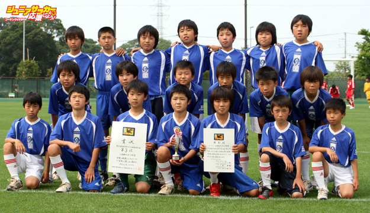

チーム集合写真・コメント
３位チーム 江南南サッカー少年団

コメント
試合を振り返ってみると、ある程度はできていたかなと感じています。ゲームプランとしては、右サイドから崩せればという感じではいたんですけど。
前半はイメージ通りで自分たちのサッカーを展開できていた。チャンスも2回ぐらいあって、どちらかが決まっていれば、結果はわからなかったんじゃないか
な……。でもまぁ、ゲームっていうのはそういうものだよね。そこで、決まるか決まらないか。ＦＣ浦和は、うちの招待試合などに来てくれたりしていたので、
ある程度戦い方はつかんでいたんだけれども。
この大会を通じて子どもたちは、以前よりも集中してプレーできるようになってきました。ただ、もっと落ち着いてできたかなと。慌てないでプレーするってい
う。そのためにはもっと個人スキルを上げていくことが大切かな。
でも、子どもたちはすごく一生懸命練習してくれたし、ゲームも一生懸命やってくれて。まぁ、監督としての俺の何かが足りなかったんだろうな……。そう思う
ね。
他のチーム写真・コメントへ